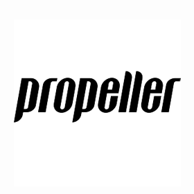

Jobs in the Field
Propeller Digital
The first one is a standard web designer. The job based in Rugby is for
Propeller Digital who offer websites for a wide range of customers and fields. Their most recent
client being the restaurant Zizzi who they created a booking integration system for. The job has a few
essential skills relating to responsive web design, verbal skills and a year of web design experience.
There are also beneficial skills such as skills in adobe illustrator, app design experience and having
fluency in HTML and CSS. Along side these they also provide a lot of personal benefits such as pension
contribution, bonus scheme, various food and drink benefits such as coffee and fruit. They also provide
many social benefits such as an annual weekend away, team days out and a 5 a side football team.

Hugo Games
The second job I have chosen is a Senior designer at
Hugo Games. Based in Nottingham, they are one of the leading providers in mobile games. This position
is for someone with more experience within the field of designer and obviously more experience in games
especially is beneficial. Experience of the whole production cycle of a product is essential and knowing
F2P (free to play) games inside and out is an asset Hugo Games are wanting you to bring to the table.
Being a senior member of the team, you are also expected to be able to mentor other members of the team
and get the most out of them. Unlike the other job less benefit are explicitly stated, however, it does
say that you’ll be in a fun working environment and have company benefits. A personal love for mobile
games is also listed.
The two jobs while for different fields, have many of the same requirements regarding knowledge and many similar
benefits, working in a computer driven environment while at a smaller company seems to be beneficial and offer
a lot of enjoyment for a job.